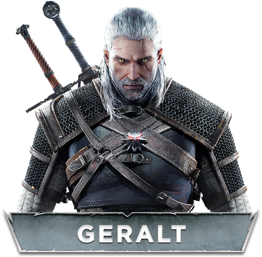
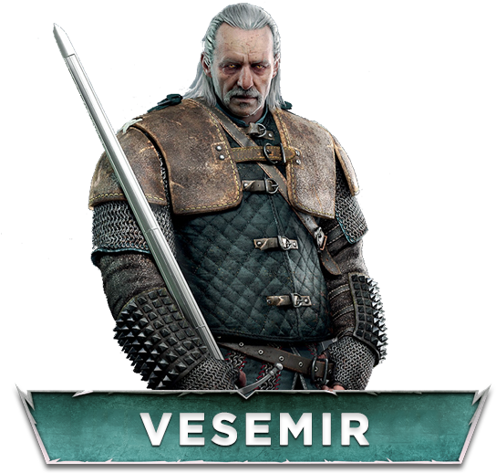

Geralt de Rívia é um personagem fictício presente em várias obras de meios como literatura, cinema, televisão e videogame. Ele apareceu pela primeira vez no conto Wiedźmin, do escritor polonês Andrzej Sapkowski, que mais tarde gerou uma série de romances intitulada Saga o wiedźminie, da qual é protagonista.

Conhecida como Leoazinha de Cintra ou para os íntimos, Ciri, nasceu em 1253 durante o festival Belleteyn. Ela é filha única de Pavetta, a princesa de Cintra, e Duny, o Ouriço de Erlenwald. E neta da rainha Calanthe. Ciri também é ligada pelo Destino com o bruxo Geralt de Rívia.

Vesemir é o bruxo mais velho e mais experiente de Kaer Morhen. Ele é uma figura paterna para Geralt e para os outros bruxos. Ele passa todos os invernos na fortaleza Kaer Morhen e vai para a estrada na primavera. Ele é um excelente esgrimista e tem grande conhecimento sobre monstros.